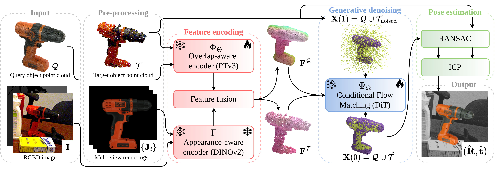

🏆 Rank 1st on BOP Leaderboard - Model-based 6D Localization of Seen Objects
Existing methods for instance-level 6D pose estimation typically rely on neural networks that either directly regress the pose in SE(3) or estimate it indirectly via local feature matching. The former struggle with object symmetries, while the latter fail in the absence of distinctive local features.
To overcome these limitations, we propose a novel formulation of 6D pose estimation as a conditional flow matching problem in ℝ³. We introduce Flose, a generative method that infers object poses through a denoising process conditioned on local features. Unlike prior conditional flow matching approaches that rely solely on geometric guidance, Flose integrates appearance-based semantic features to mitigate ambiguities caused by object symmetries.
We further incorporate RANSAC-based registration to handle outliers. We validate Flose on five datasets from the established BOP benchmark, where it outperforms prior methods with an average improvement of +4.5 Average Recall.

Overview of Flose.
Given the query object point cloud $\mathcal{Q}$ and an RGBD image $\mathbf{I}$ as input (left),
Flose estimates the 6D pose $(\hat{\mathbf{R}}, \hat{\mathbf{t}})$ (bottom right) through three stages:
feature encoding (red), generative denoising (blue), and pose estimation (green).
Feature encoding: An overlap-aware encoder $\Phi_\Theta$ and an appearance-aware encoder $\Gamma$
produce per-point descriptors, which are fused into $\mathbf{F}^\mathcal{Q}, \mathbf{F}^\mathcal{T}$.
Colors encode feature similarity: corresponding regions share similar colors, while semantically distinct parts differ.
Generative denoising: A generative network $\Psi_\Omega$, conditioned on
$\mathbf{F}^\mathcal{Q}, \mathbf{F}^\mathcal{T}$, learns a displacement field that iteratively denoises
a Gaussian-noised point cloud $\mathbf{X}(1)$ into an aligned configuration $\mathbf{X}(0)$.
Pose estimation: The final 6D pose $(\hat{\mathbf{R}}, \hat{\mathbf{t}})$ is recovered using a
RANSAC-based Kabsch solver followed by ICP refinement.
Comparison with RGBD methods in terms of AR. The top block (rows 1–5) trains a separate model for each object, while the bottom block (rows 6–11) trains a Single Model (S.M.) per dataset. Row 12 quantifies the absolute improvement of Flose over the strongest S.M. competitor.
| # | Method | S.M. | LM-O | T-LESS | TUD-L | IC-BIN | YCB-V | Avg |
|---|---|---|---|---|---|---|---|---|
| 1 | Pix2Pose | 58.8 | 51.2 | 82.0 | 39.0 | 78.8 | 62.0 | |
| 2 | ZebraPose | 75.2 | 72.7 | 94.8 | 65.2 | 86.6 | 78.9 | |
| 3 | GDRNPP (BOP22) | 77.5 | 87.4 | 96.6 | 72.2 | 92.1 | 85.2 | |
| 4 | HccePose(BF) | 80.5 | 87.9 | 94.4 | 72.4 | 91.1 | 85.3 | |
| 5 | GDRNPP (BOP23) | 79.4 | 91.4 | 96.4 | 73.7 | 92.8 | 86.7 | |
| 6 | Koenig-Hybrid | ✔ | 63.1 | 65.5 | 92.0 | 43.0 | 70.1 | 66.7 |
| 7 | CosyPose | ✔ | 71.4 | 70.1 | 93.9 | 64.7 | 86.1 | 77.2 |
| 8 | SurfEmb | ✔ | 75.8 | 83.3 | 93.3 | 65.6 | 82.4 | 80.1 |
| 9 | CIR | ✔ | 73.4 | 77.6 | 96.8 | 67.6 | 89.3 | 81.0 |
| 10 | PFA | ✔ | 79.7 | 85.0 | 96.0 | 67.6 | 88.8 | 83.4 |
| 11 | Ours | ✔ | 86.1 | 86.9 | 98.8 | 74.8 | 92.8 | 87.9 |
| 12 | Improvement | +6.4 | +1.9 | +2.8 | +7.2 | +4.0 | +4.5 |
Flose ranks 1st on BOP leaderboard for the task of Model-based 6D Localization of Seen Objects – BOP Classic Core.
@inproceedings{hamza2026flose,
author = {Hamza, Amir and Boscaini, Davide and Li, Weihang and Busam, Benjamin and Poiesi, Fabio},
title = {Generative 6D Pose Estimation via Conditinal Flow Matching},
booktitle = {ICIP},
year = {2026},
}